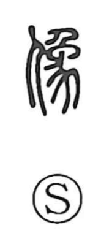

像

Kun: | On: zou
image ・ figure ・ portrait ・ statue
Explanation
像 is a phono-semantic character with 象 serving as the phonetic, which gives the on reading zō. The Shuowen defines it as “to resemble” and notes that it is read like 養 (yo) in 養子, suggesting yo as an older on reading. Because 養 and 様 share that yo reading, the character naturally extended to denote outward appearance and state—form, model, figure—hence its senses of image, likeness, and the shaped figure.